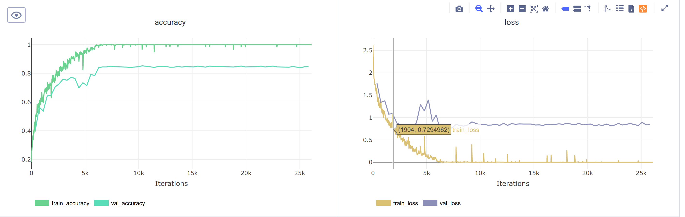
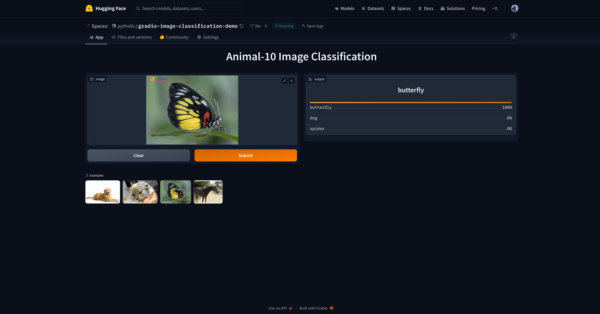
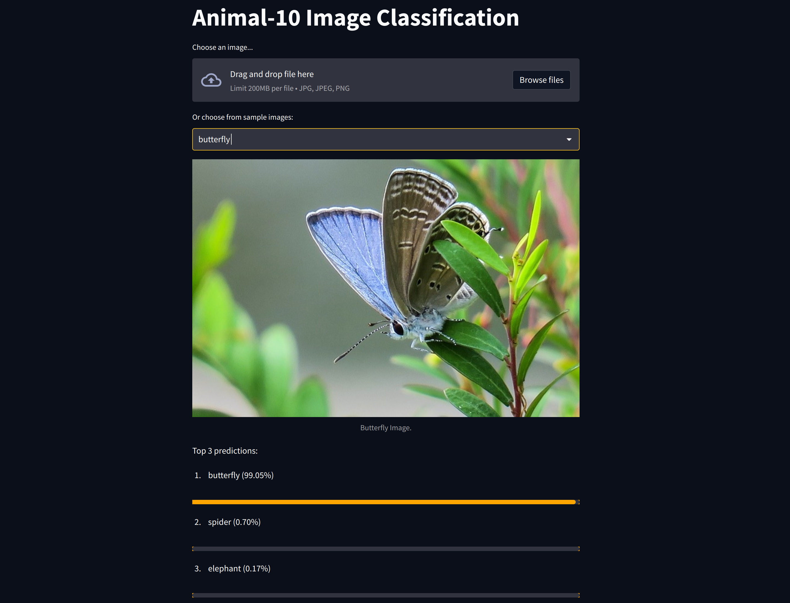

In this project, I built an image classification network on Animal-10 dataset. I used ResNet-18 architecture as my model baseline and ClearML to track my experiments. Then I create a web app in both Streamlit and Gradio frameworks, and deploy it on huggingface.


